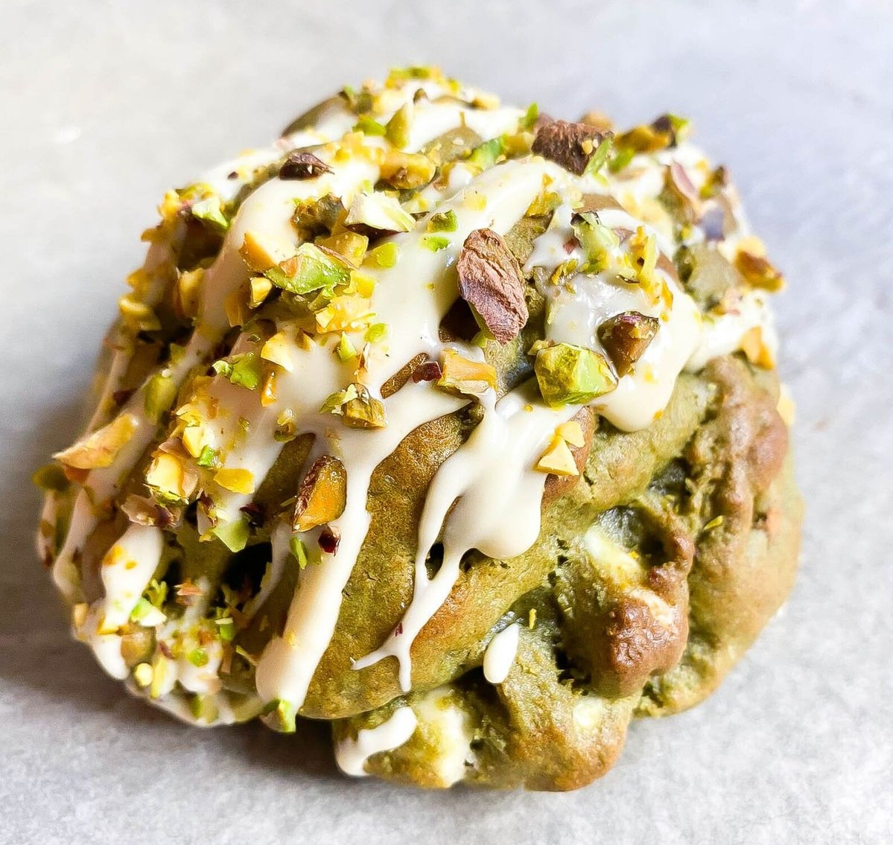

Receta de cookies de Pistacho
Ingredientes
👤10 galletas aprox
- 150 gr harina
- 100 gr azúcar morena
- 75 gr mantequilla
- 1 huevo
- 70 gr pistachos
- 100 g de chips de chocolate blanco
- 1 cucharadita de levadura
- 1 pellizco de sal
- Crema de pistacho
Procedimiento
🕛 10min + 1h reposo + 20min horno
- Batimos la mantequilla con el azúcar. Añadimos el huevo y cuando esté incorporado agregamos la harina, la sal y la levadura hasta que quede todo bien mezclado
- Ponemos el chocolate blanco y los pistachos y acabamos de combinar bien.Hacemos bolas de unos 25gr, hacemos un pequeño hueco en el medio, rellenamos con la crema de pistacho y tapamos con otros 25gr de masa
- Dejamos reposar en la nevera mínimo una hora o en el congelador unos 30 min
- Horneamos a 180 gr unos 20 min o hasta que veamos que empiezan a estar doraditas. Dejamos enfriar y… A disfrutar 💚
